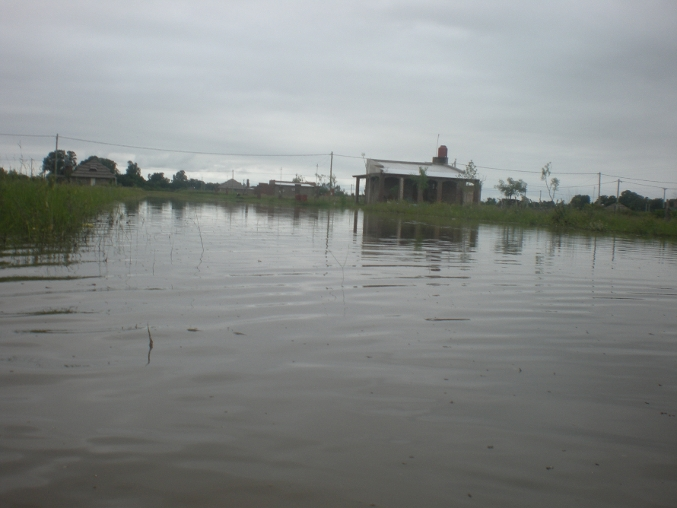
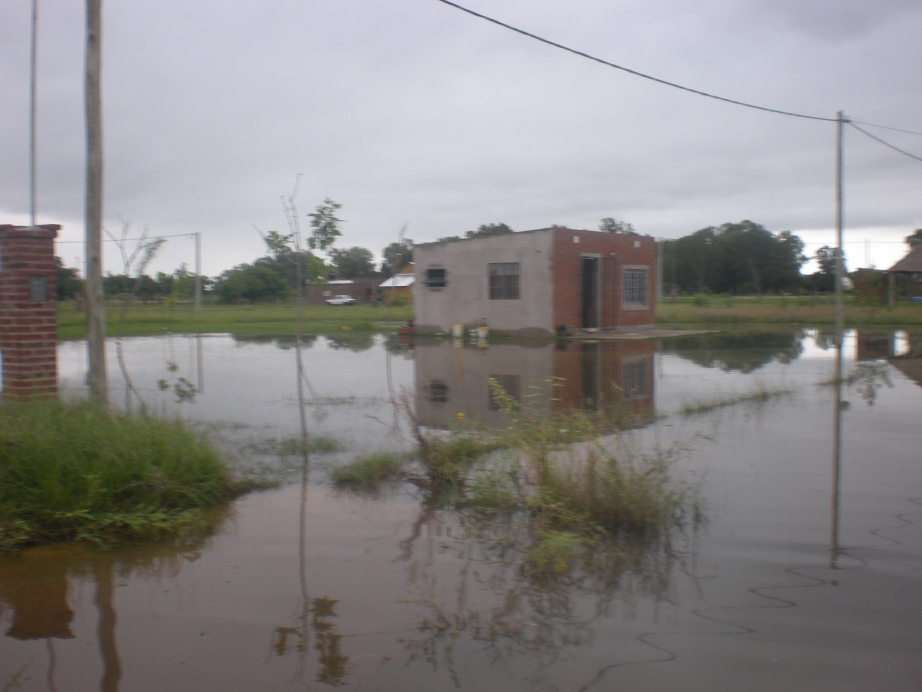
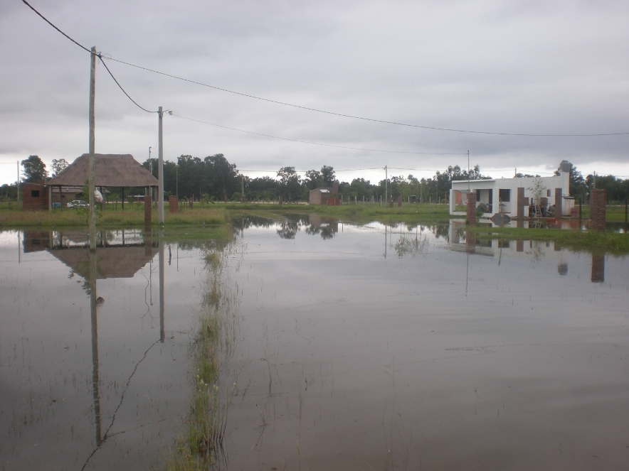

Cuatro bulones pueden hacer que tu casa se inunde
Pasaba la tarde del viernes y no se podía estar del calor y la humedad, un día fatal, ¿quién se iba a imaginar que al despertar del sábado y luego de aproximadamente 140mm caídos acá en arroyo leyes iba a encontrarme con este panorama?, se juntó todo, el agua de la creciente, las napas altas que impiden que el suelo absorba el agua, etc.
Yo vivo en el barrio "Los álamos II", aproximandamente a 800 mts. al este de la comuna. La compuerta que desagota el agua de lluvia está cerrada debido a que el río está alto, entonces la única forma de desagotar el agua de las alcantarrillas es mediante una bomba, acá en arroyo leyes tengo entendido que existen 4 bombas 2 de ellas desagotan 1000m3/h y 2 500m3/h. La bomba para desagotar el agua se puso recién a las 18:00hs del sábado, para las 00:00 con la ayuda de esta bomba el agua estancada había descendido aproximadamente 3cm, pero la bomba se rompió, se le cortaron los bulones entre el eje y la turbina, cuando yo me enteré de eso eran las 12:00 del mediodía del domingo, al llegarme hasta la comuna y charlar con la persona que estaba tratando de repararla, veo que la bomba tiene sólo 13hs (se podía ver mediante un medidor) de funcionamiento desde que se compró... al lado estaba la otra bomba de 500m3/h que supuestamente funcionaba. Luego de todo esto me surgen algunas preguntas:
- ¿Por qué pusieron la bomba recién a las 18:00hs?
- ¿La bombas son nuevas, no tienen algo así como una garantía o servicio técnico en caso de falla?
- ¿A alguien se le ocurrió probar las bombas antes de usarlas en caso de emergencia?
- ¿Sí la otra bomba funcionaba por qué no la pusieron?
- ¿Por qué se rompió la bomba? Por que si rompió por que chupó algo sólido por ejemplo, habría que pensar en poner algún tipo de filtro
La verdad tener un equipo que debe costar algo así cómo ¿150.000 pesos supongamos? (supongo que las bombas son estas ) parado por 4 bulones, no me cierra, y que este equipo no tenga un servicio técnico especializado, menos me cierra, no es inteligente comprar algo tan valioso y tan importante para la población sin un servicio de reparación y mantenimiento, muchachos pongamonos las pilas y reclamemos a QH Ingeniería y Servicios de Rosario que nos solucione el problema o que nos dé una bomba nueva, sí es que el problema se refiere a un defecto de fábrica.
Una vez más, la tecnología, por sí sola, no soluciona los problemas, atrás de ella tiene que haber personas con ganas y actitud para resolver problemas, además de un servicio llevado a cabo por gente capacitada.
Espero que este problema se solucione pronto y que mañana esté la bomba funcionando.
Sería buenísimo ir pensado en poner un casa bomba con una bomba fija en ese lugar para evitar todo este tipo de problemas, y en caso de que la bomba se rompa tener una solución pensada de antemano, alguien que sepa arreglar, un lugar dónde obtener los repuestos, etc.
Para contactarse conmigo: ramos.gaston (arroba) gmail.com


